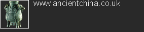
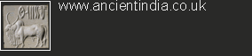

|
|
|||
'Ancient Civilizations' is a unique tool for the study of world history. A series of culture-based websites look in depth at the achievements of some of the most remarkable world civilizations. The Ancient Civilizations site itself focuses on important cross-cultural themes of human development, showing how societies have interacted and influenced one another. The sites are carefully
designed to give maximum learning value to pupils and their teachers
studying History at upper primary KS2 and secondary KS3 level. They
use a variety of learning styles, supported by interactive multimedia
resources, historical reconstructions and 3D animations.
The first two sites in the series, launched in 1999 and 2001, with over 5 million visitors annually, have established the British Museum at the forefront of e-learning provision for schools. We hope Ancient Civilizations will encourage our world-wide educational audience to use the Museum's unparalleled collection to learn about their world in a new way. |
  |
||
|
|
|||